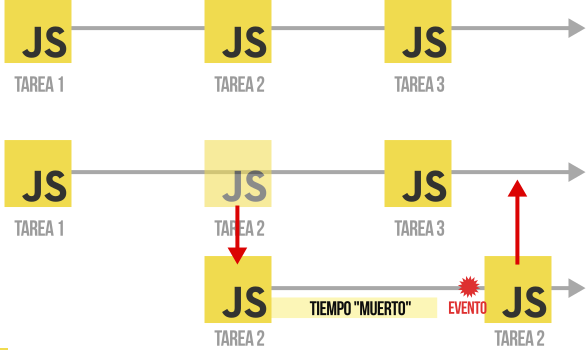

JavaScript: El Mundo de la Asincronía
Introducción
La asincronía es un concepto fundamental que rige el mundo de JavaScript. En esta clase, exploraremos ¿Cómo maneja JavaScript la asincronía? y ¿Cómo impacta en el desarrollo de aplicaciones?
Programación Sincrónica vs. Asincrónica
En la programación, normalmente realizamos tareas de forma sincrónica, lo que significa que se ejecutan una detrás de otra en un orden predecible. Esto facilita el seguimiento del flujo del programa.
Sin embargo, en el mundo real, a menudo debemos realizar operaciones asincrónicas. Por ejemplo, en JavaScript, tenemos que esperar eventos externos, como la carga de recursos, para continuar con otras tareas.
Lenguaje No Bloqueante
JavaScript se considera un lenguaje no bloqueante. Esto significa que no es necesario esperar a que una tarea se complete antes de realizar otra. En lugar de bloquear la ejecución, JavaScript mueve tareas asincrónicas a una lista de pendientes y continúa con otras tareas.
Esto permite que las aplicaciones sean más receptivas y eficientes, ya que pueden realizar múltiples tareas simultáneamente.
Gestión de la Asincronía en JavaScript
Para gestionar la asincronía en JavaScript, existen varias técnicas populares:
- Promesas (ES6 o ECMAScript 2015): Son una forma más moderna y estructurada de manejar la asincronía, permitiendo un mejor control y manejo de errores.
- async/await (ES8 o ECMAScript 2017): Esta sintaxis, construida sobre promesas, proporciona una forma más clara y concisa de escribir código asincrónico, añadiendo una capa de azúcar sintáctico.